Ph.D. Research
Featured Research Code
Foundation X/X+
An end-to-end model integrating classification, localization, and segmentation tasks
Foundation CTPA
A slice-based 3D foundation model integrating classification, detection, and segmentation
EViT and Benchmark (CAD_PE)
Benchmarking CNNs, Vision/Swin Transformers, and self-supervised models, plus the EViT framework
Stepwise Pretraining
Achieving discriminative, restorative, and adversarial learning
Benchmarking Transformers
Benchmarking and boosting transformers for image classification
POPAR
Restoring patch order and appearance for self-supervised image analysis
Independent Projects
Selected Independent Projects
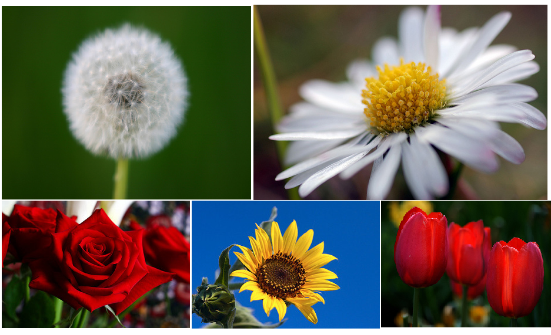
Image Classification
Flower Recognition
Python CNN TensorFlow TFLearn
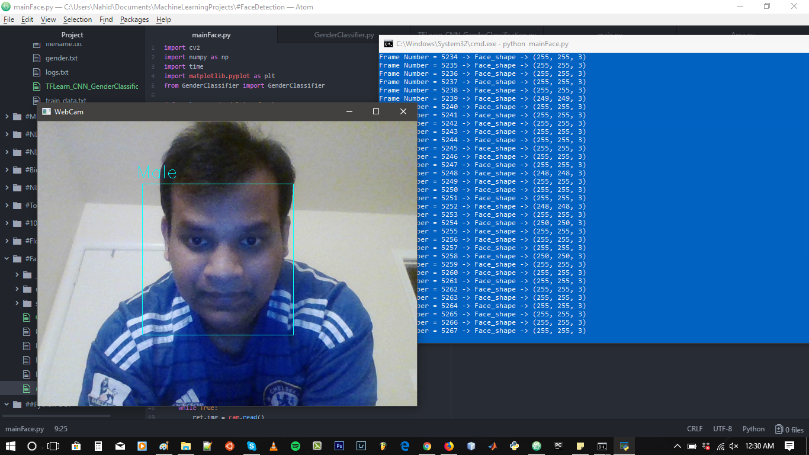
Image Classification
Gender Classification on WebCam
Python CNN TensorFlow TFLearn
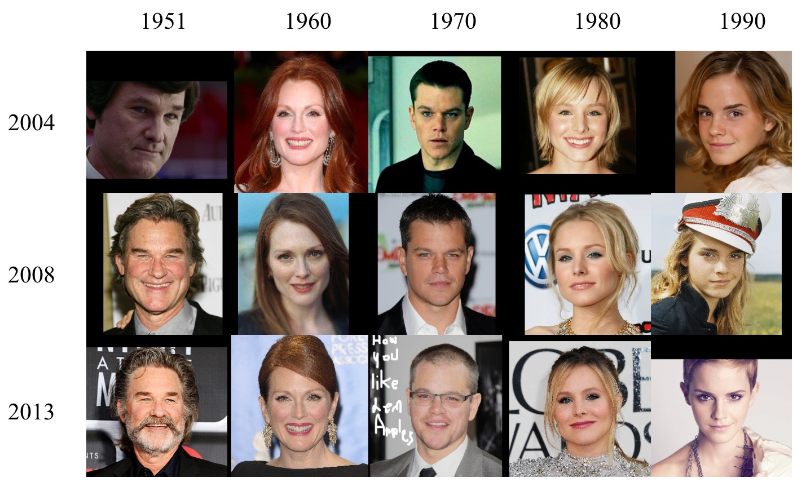
Image Classification
Gender Classification on CACD
Python CNN TensorFlow TFLearn
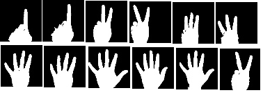
Image Classification
Hand Gesture Recognition
Python CNN TensorFlow TFLearn
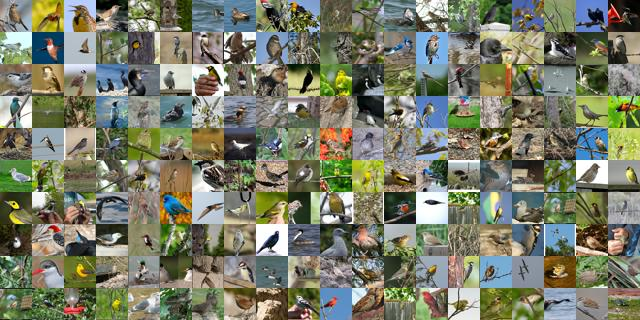
Image Classification
Caltech-UCSD Birds Classifier
Python CNN TensorFlow TFLearn
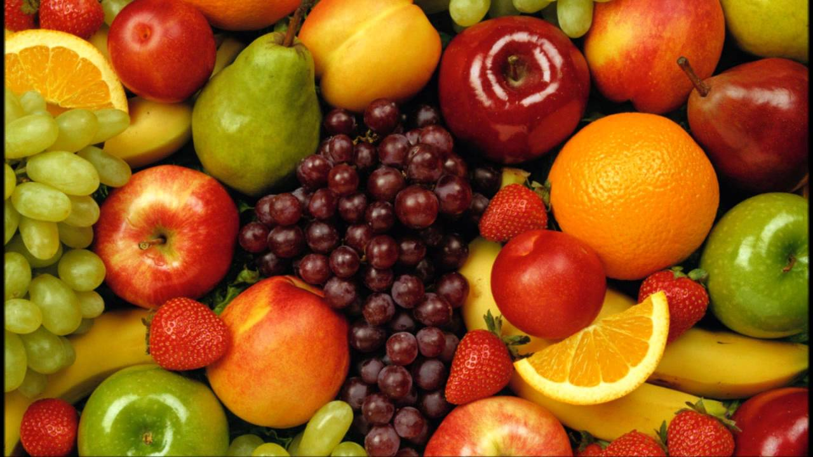
Image Classification
Fruits 360 Classifier
Python CNN TensorFlow TFLearn
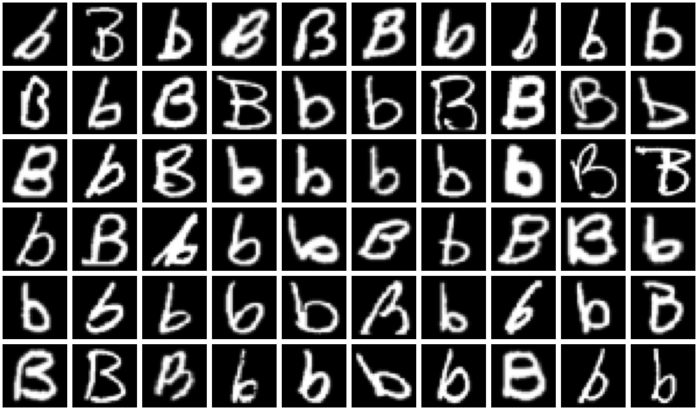
Image Classification
Hand Written Letter Recognizer_EMNIST
Python CNN TensorFlow TFLearn
Image Classification
Dog Vs. Cat
Python CNN TensorFlow TFLearn
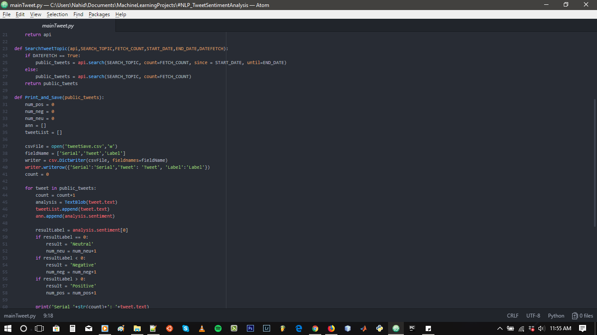
Natural Language Processing
Sentiment Analysis on Twitter Search
Python TextBlob
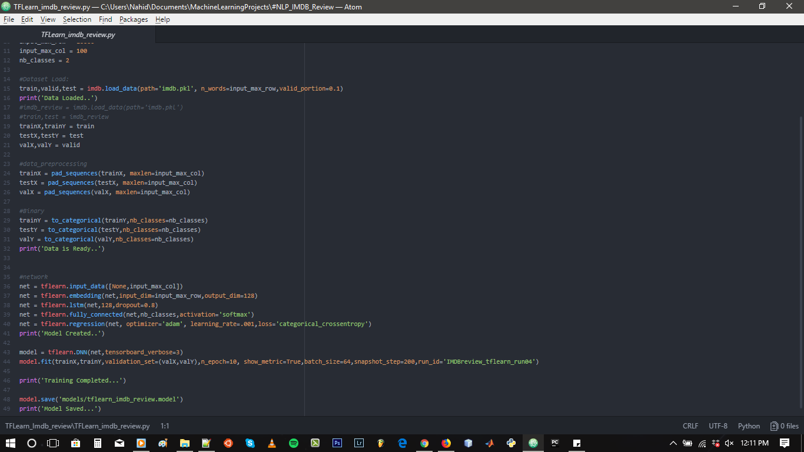
Natural Language Processing
IMDB Movie Review
Python LSTM TensorFlow TFLearn
Image Classification
Dog Vs. Cat
Python CNN TensorFlow Keras
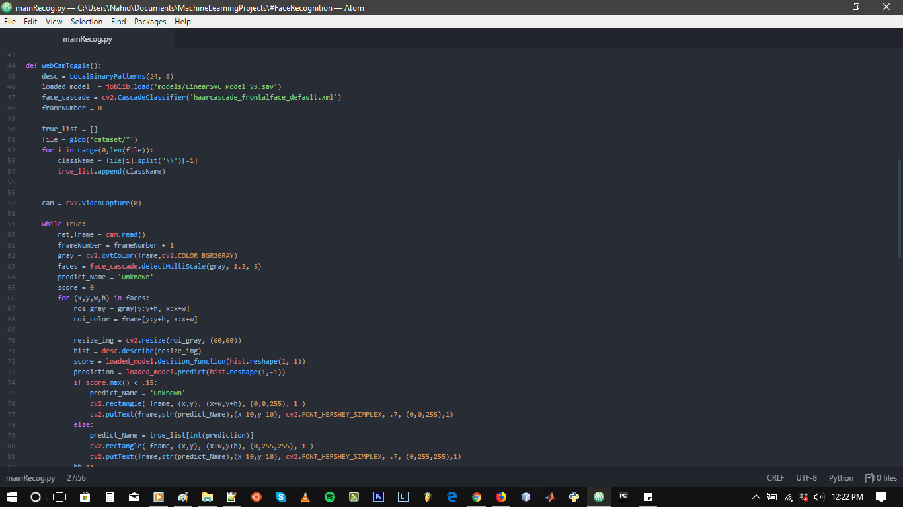
Image Classification
Face Recognition
Python OpenCV LBP
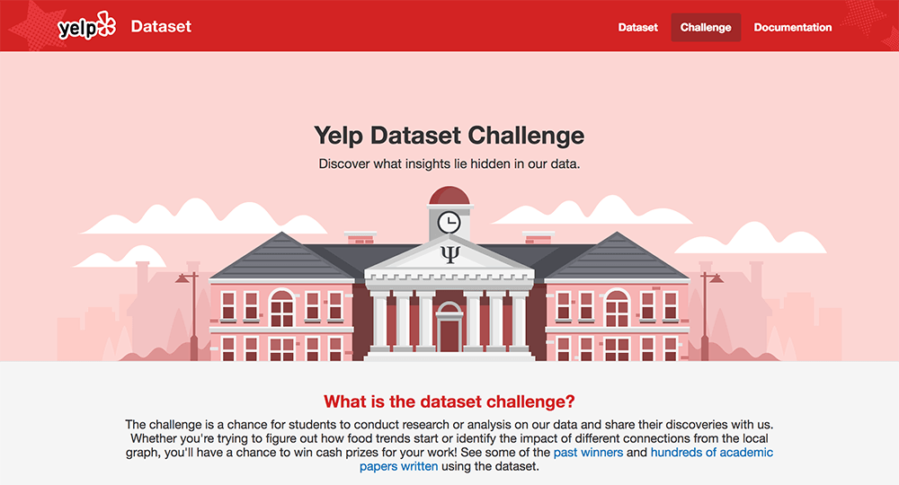
Review Prediction
Restaurant Review Prediction Analysis
Python ScikitLearn Pandas
More projects can be found in my GitHub repositories.